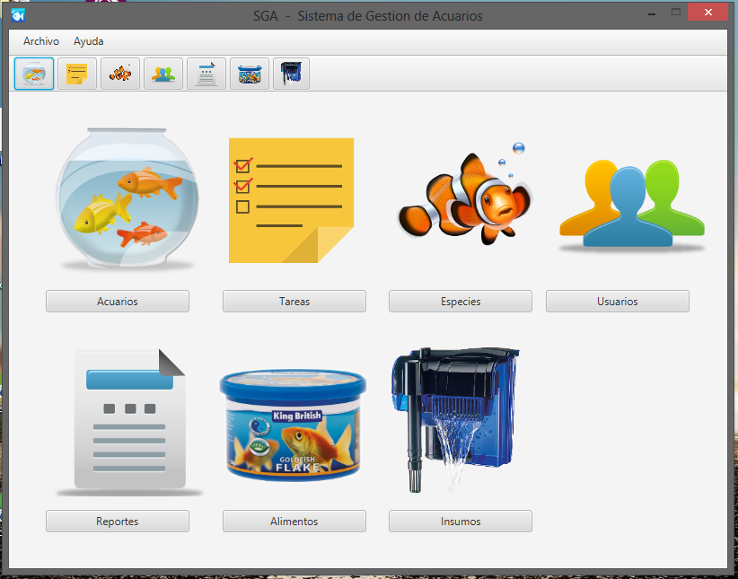
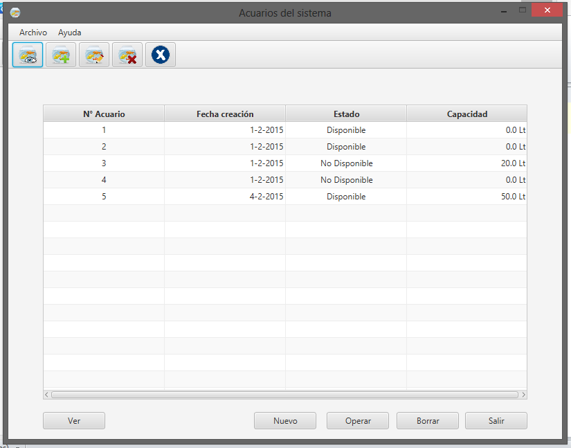
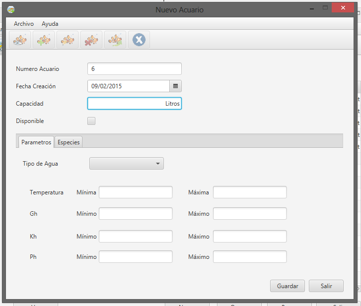

Todos los usuarios registrados como ADMINISTRADOR o ESPECIALISTA podrán ingresar a ésta sección y realizar altas, bajas o modificaciones de los acuarios registrados.
Cuando desde la pantalla principal ingrese a la sección de ACUARIOS (cuyo ícono es una pecera con tres peces dentro), se desplegará ante usted la lista de acuarios registrados en el sistema, para cada uno de ellos, habiéndolo seleccionado, podrá ver su información.

La pantalla con la que se encontrará al ingresar en la sección acuario será la siguiente:

Además, podrá dar de alta nuevos acuarios en el sistema, como se muestra en la siguiente pantalla:

Created with the Personal Edition of HelpNDoc: Free HTML Help documentation generator